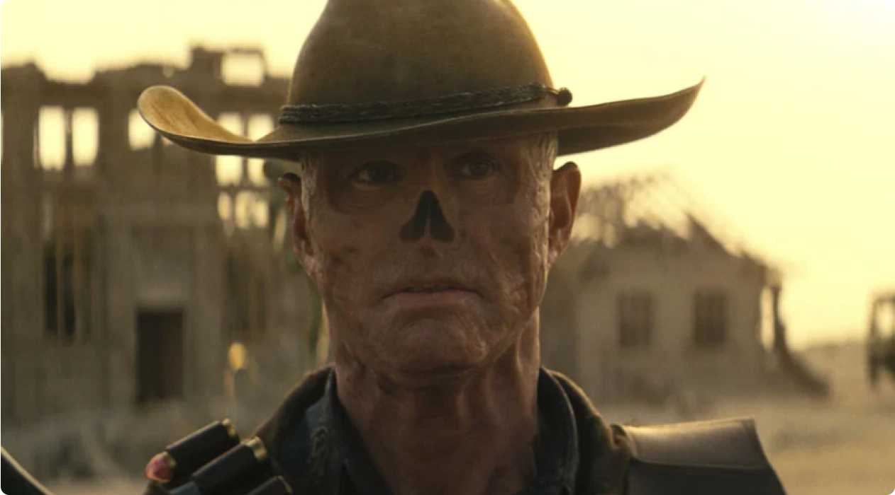
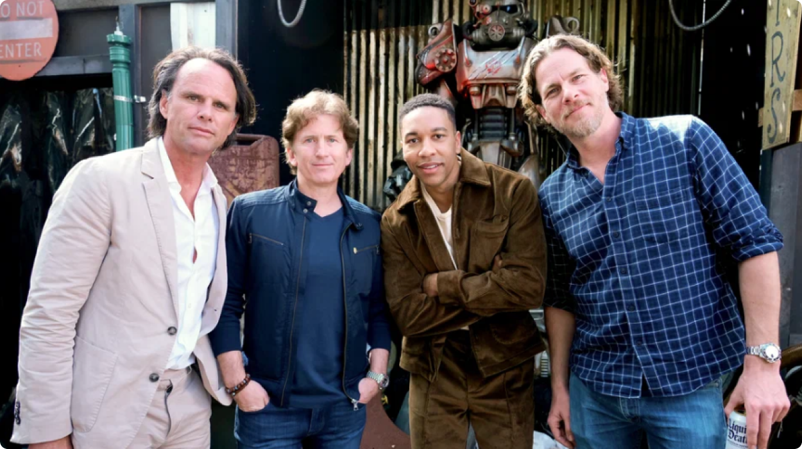

<section class="card">
    <div class="container">
        <div class="card__body">
            <div class="card__body-soft">
                <span class="op">Фоллаут</span>
                <p class="op">/</p>
                <span class="op">Новости</span>
                <p class="op">/</p>
                <p class="op">Новости и факты сериала Фоллаут 2024</p>
            </div>
            <div class="card__body-box">
                <div class="card__body-box-news">
                    <div class="card__body-box-news-left">
                        
                        <span class="op">НОВОСТИ И ФАКТЫ СЕРИАЛА ФОЛЛАУТ "FALLOUT" 2024</span>
                    </div>
                    <div class="card__body-box-news-right">
                        <div class="card__body-box-news-right-date">
                            <span class="op">12 ноября 2023</span>
                            <svg width="24" height="24" viewBox="0 0 24 24" fill="none" xmlns="http://www.w3.org/2000/svg">
                                <path fill-rule="evenodd" clip-rule="evenodd" d="M16.9 3.57H17C19.7614 3.57 22 5.80858 22 8.57V17.57C22 20.3314 19.7614 22.57 17 22.57H7C5.67392 22.57 4.40215 22.0432 3.46447 21.1055C2.52678 20.1679 2 18.8961 2 17.57V8.57C2 5.80858 4.23858 3.57 7 3.57H7.1V1.75C7.1 1.33579 7.43579 1 7.85 1C8.26421 1 8.6 1.33579 8.6 1.75V3.57H15.4V1.75C15.4 1.33579 15.7358 1 16.15 1C16.5642 1 16.9 1.33579 16.9 1.75V3.57ZM7.5 9.66H16.5C16.9142 9.66 17.25 9.32421 17.25 8.91C17.25 8.49579 16.9142 8.16 16.5 8.16H7.5C7.08579 8.16 6.75 8.49579 6.75 8.91C6.75 9.32421 7.08579 9.66 7.5 9.66Z" fill="#7F8A96"/>
                            </svg>                                
                        </div>
                        <p class="op">Специально для тех, кто не знал - "Fallout" переводится с английского как выпадение радиоактивных осадков. Amazon наконец-то предоставил большой публике кадры из их нового сериала "Fallout".</p>
                    </div>
                </div>
                <div class="card__body-box-item">
                    <h3 class="card__body-box-item-title">
                        Выпадение радиоактивных осадков
                    </h3>
                    <div class="card__body-box-item-main">
                        <p class="op">В конце XXI века большая часть цивилизации гибнет в результате глобального ядерного конфликта. А 200 лет спустя Люси Маклин (Элла Пернелл) собирается выйти замуж. Люси выросла в Убежище 33, одном из подземных бункеров корпорации Vault-Tec, где избранные счастливцы поколение за поколением ждали, пока можно будет выйти наружу (вроде бы уже вот-вот!). В день свадьбы вслепую с детиной из соседнего бункера все идет наперекосяк, в Убежище проникают бандиты во главе с женщиной по имени Ли Молдейвер (Сарита Чоудри), кого-то убивают, а Люсиного отца Хэнка (Кайл Маклоклен), смотрителя Убежища, забирают с собой.</p>
                        
                    </div>
                </div>
                <div class="card__body-box-item">
                    <h3 class="card__body-box-item-title">
                        Кто работает над сериалом
                    </h3>
                    <div class="card__body-box-item-main">
                        
                        <p class="op">Над сериалом работает семейный дуэт продюсеров Джонатана Нолана и Лизы Джой. Джонатан выступил соавтором сценария нескольких фильмов своего оскароносного брата («Престиж», «Темный рыцарь», «Интерстеллар»), а затем подался на телевидение и вместе с женой создал два крайне успешных сериала — «В поле зрения» и «Мир Дикого Запада».
                            В Fallout Нолан снял три первых эпизода, но в остальном его роль ограничивается функциями создателя и исполнительного продюсера. Авторами сценария и шоураннерами сериала являются Женева Робертсон-Дуорет («Tomb Raider: Лара Крофт», «Капитан Марвел») и Грэм Вагнер («Офис», «Портландия», «Силиконовая долина»). Вторым режиссером заявлен Уэйн Йип («Властелин колец: Кольца власти», «Доктор Кто», «Отбросы»), но пока неясно, поставит ли он все остальные пять эпизодов или же только часть.</p>
                    </div>
                </div>
                <div class="card__body-box-tag">
                    
                    <p class="op">«Это совершенно новая история, которая разворачивается после всех тех событий, которые мы видели в играх, — разъясняет шоураннер <span>Грэм Вагнер.</span></p>
                    
                </div>
                <div class="card__body-box-desc">
                    <span>Выпадение радиоактивных осадков</span>
                    <p class="op">В конце XXI века большая часть цивилизации гибнет в результате глобального ядерного конфликта. А 200 лет спустя Люси Маклин (Элла Пернелл) собирается выйти замуж. Люси выросла в Убежище 33, одном из подземных бункеров корпорации Vault-Tec, где избранные счастливцы поколение за поколением ждали, пока можно будет выйти наружу (вроде бы уже вот-вот!).
                        <br><br>
                        В день свадьбы вслепую с детиной из соседнего бункера все идет наперекосяк, в Убежище проникают бандиты во главе с женщиной по имени Ли Молдейвер (Сарита Чоудри), кого-то убивают, а Люсиного отца Хэнка (Кайл Маклоклен), смотрителя Убежища, забирают с собой.
                        <br><br>
                        В конце XXI века большая часть цивилизации гибнет в результате глобального ядерного конфликта. А 200 лет спустя Люси Маклин (Элла Пернелл) собирается выйти замуж. Люси выросла в Убежище 33, одном из подземных бункеров корпорации Vault-Tec, где избранные счастливцы поколение за поколением ждали, пока можно будет выйти наружу (вроде бы уже вот-вот!). В день свадьбы вслепую с детиной из соседнего бункера все идет наперекосяк, в Убежище проникают бандиты во главе с женщиной по имени Ли Молдейвер (Сарита Чоудри), кого-то убивают, а Люсиного отца Хэнка (Кайл Маклоклен), смотрителя Убежища, забирают с собой.
                    </p>
                </div>
            </div>
        </div>
    </div>
</section>